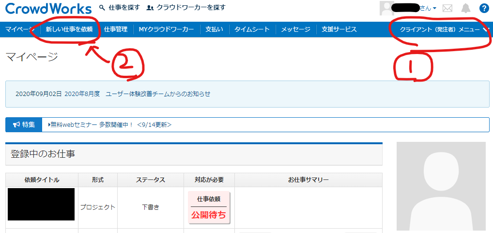
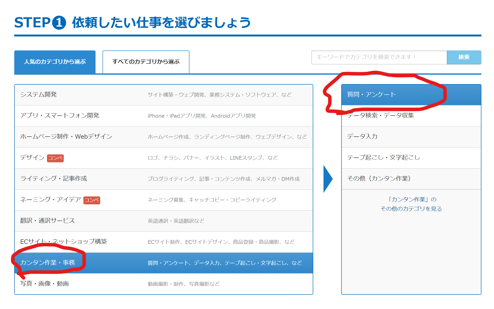
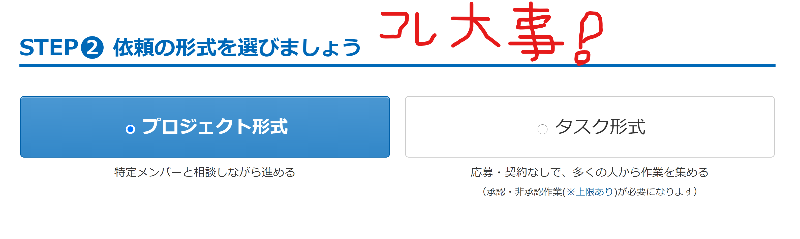
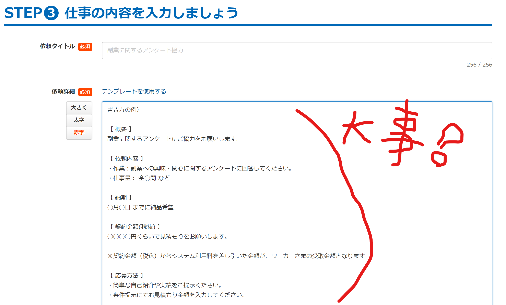
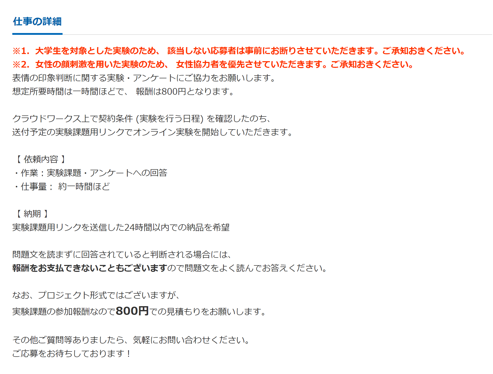
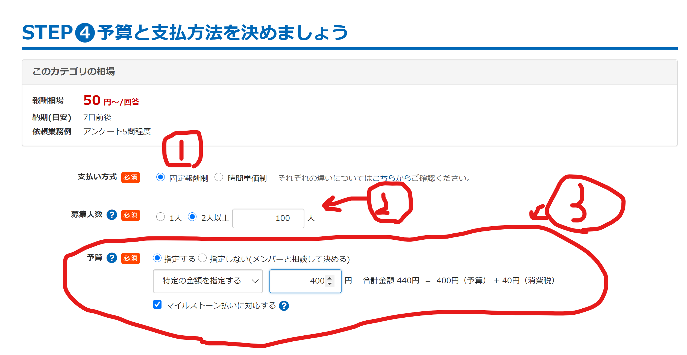
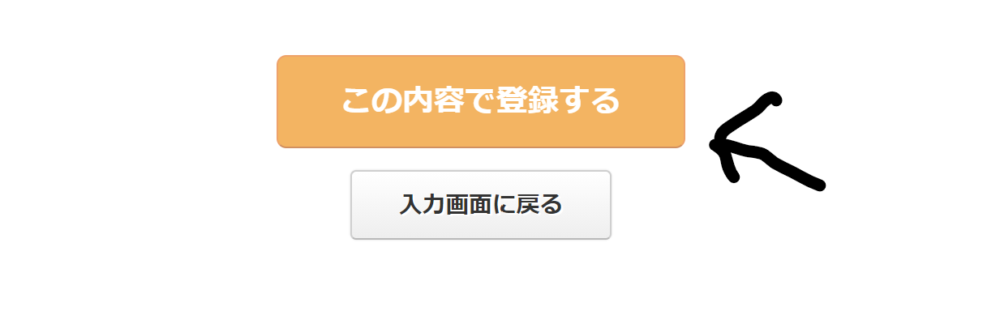

せっかくせっせと手を動かして作成したオンライン実験、学内のリソースで閉じてませんか。
あなたの研究活動、クラウドワークス
 で促進しちゃいましょう。
で促進しちゃいましょう。
ここでのお話
・Crowdworksを用いた実験の行い方を割と丁寧に（2020年11月現在の）
ここでしないお話
・オンライン実験の作り方
(Gorillaの記事は過去に書いてる。ほかにも需要あれば…)
lab.js、Gorilla、Pavlovia用いるPsychopyなどなど様々なオンライン心理実験を行うためのツールが現在では提供されていてとっても便利である。これらのツールについてはいろいろなところで情報が提供されてるので、そういうとこを参照しましょう。
しかし、オンライン実験用のプログラム（データ保存のサーバー含む）ができたとしても、その実験をやってくれる人がいないと意味がない。これが俗にいう「準備はできたけど参加者どうしよう問題」である。
そこでこの記事では、そうしたニーズを解消するためにクラウドワークス
 と呼ばれる在宅ワーカーと仕事発注者のマッチングを行えるサービスを紹介するゾ。
と呼ばれる在宅ワーカーと仕事発注者のマッチングを行えるサービスを紹介するゾ。
※オンライン実験を行う際にはいうまでもなく、所属機関での倫理審査をしっかり受けたうえで行うこと。お兄さんとの約束だゾ☆
CrowdWorksとは
ようは「お仕事をインターネット上で受注・発注」できるサービスです。
本記事で想定しているニーズからいえば「オンライン実験を依頼したいあなた（クライアント）」が「心理実験に参加して報酬を得たいクラウドワーカーさん」に対して、実験用のリンクを送ったり質問紙を送ったりしてオンライン実験に協力してもらって、その対価としての報酬をCrowdWorksを介してお支払いするシステム、になってます。
他にも（倫理的に問題なければ）データ入力の依頼ができたり、簡単なアンケート回答で逆にお小遣い稼ぎをすることもできるはず。活用の幅はいろいろあるのでまぁ以下からとりあえず登録すればよい。
ここ
 から登録できます。
から登録できます。
具体的なやり方
Crowdworksになんやかんやで登録すると以下の画像のように「クライアント（発注者）メニュー」が出てくる。

「新しい仕事を依頼」をクリックすると、実験依頼の作成スタートです。
ほしたら下のような画像が出てくる。大体の心理実験は質問・アンケートでそれにチェック入れよう

次はプロジェクト形式かタスク形式かの選択だ。画像にも書いてあるが「プロジェクト形式」は一人一人と契約をして仕事をするタイプで、「タスク形式」はリンクなどを置いておいて放置しとくだけで短時間に多数の仕事を依頼する形式だ。

ちなみにクラウドワークスの人に直接伺ったんやけど、「データの質を意識するならプロジェクト形式です」との助言をいただいたので、質が気になる人は仕事をする相手とのやり取りがその都度ある分若干手間だけど、プロジェクト形式がおすすめである（何か問題があったときにもプロジェクト形式のがリカバリーしやすい）
ここで依頼詳細を書くところで実験についての内容などを書いていこう。トラブル回避のためになるべく読みやすく、丁寧に書かないと、えらいことになります。丁寧に書こう！！

赤字とか太字とかを使って、いい感じに書こう。以下に一例を載せておく。(値段や内容はフィクションです)

予算と支払方法については、①固定報酬を選んで、②募集人数（予定）を入れて、③予算（ここでは実験参加に対する謝金）を記入

以降はStep5に期限（日程）を記入して、Step6は有料オプションなので無視しましょう（必要な人は必要なものをチェックしましょう）
その後「確認画面に進む」を押せば、これまで入力した情報を確認する画面が出ます。
そんで「この内容で登録する」を押せば、おめでとうございます！あなたの実験募集がスタートです！！

その後の流れとしては、『プロジェクト形式』の場合はワーカー（参加者）が応募してくる⇒承認する⇒実験リンクを送って回答したら連絡もらう⇒回答終了の連絡が来たらデータを確認後、検収を確認して支払いをする、みたいな感じです！
「タスク形式」の場合は、ほっておけば参加者が募集上限まで勝手に集まってます。らくぅ～。
ワーカーさんによる回答の質
「オンライン実験をするうえでデータの質が気になる」という方もいるだろうけど一応サンプルの質を調べた研究も存在する。「だから大丈夫！」ってわけでもないので「プロジェクト形式」とか「ちゃんと読まないやつを検出する項目」とかを含めると良いだろう。
経験的には結構年配の方にもご協力いただけるので年齢のレンジは広くなりそう。研究目的によっては注意するんじゃぞい！